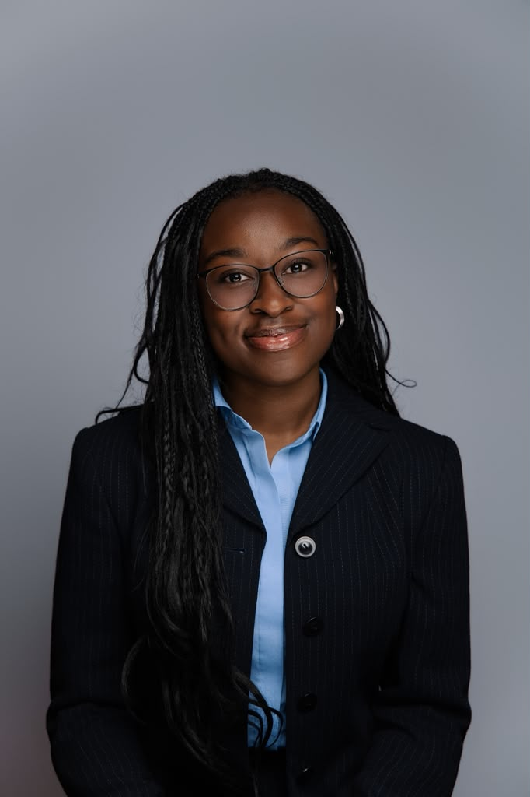
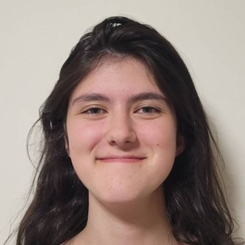
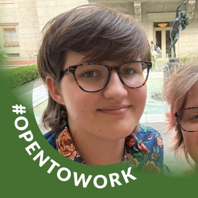

Esther Aduamah
Bioengineering, Class of 2027
We were brought together as undergraduate students from Olin College of Engineering, an institution near the Boston area, for our final project in Bioengineering and Beyond!
For our final project, we decided to focus on access to healthcare within Massachusetts. There are many groups that do not have proper access to healthcare or preventative healthcare options, or have no idea where to even start looking for these resources.
We became particularly interested in food insecurity because access to nutritious food is an important part of preventative healthcare and overall community well-being.
We wanted to create something that could live longer term and serve as a resource for people beyond our class. Our goal is to make information about food assistance, community gardens, local grocery stores, and other food resources easier to find and understand.

Bioengineering, Class of 2027

Bioengineering, Class of 2028
Business Analytics & Operations, Class of 2028

Bioengineering, Class of 2027